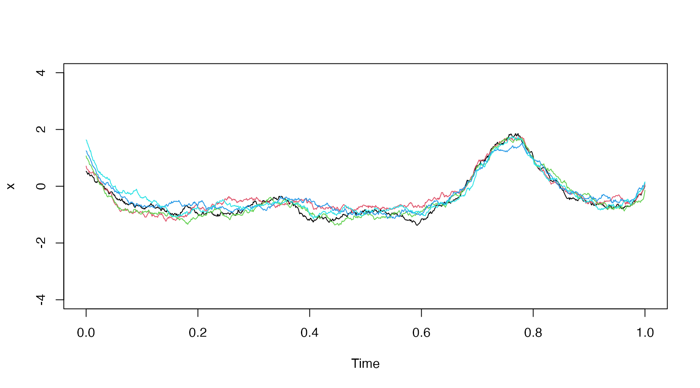
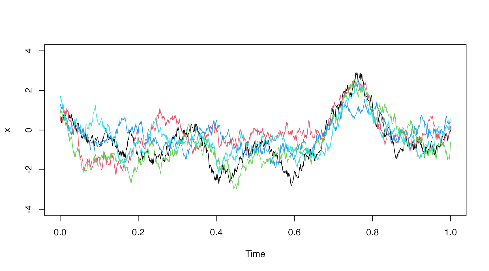
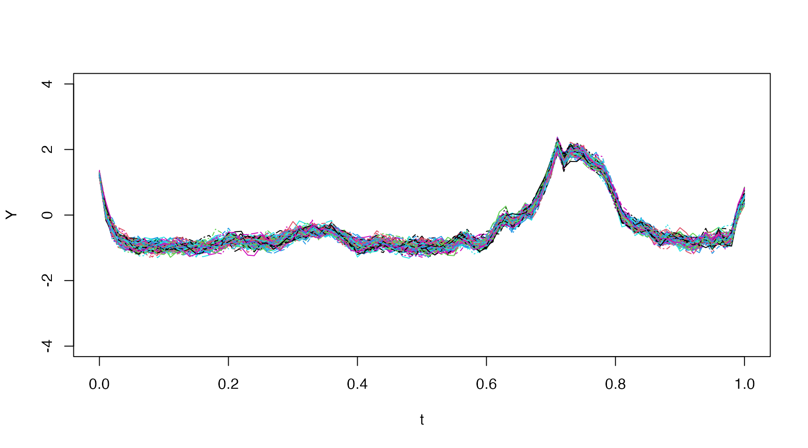

This vignette demonstrates how to use the simulate
method for calculating k-step-ahead stochastic simulations
trajectories.
Introduction
Notation
We use subscript to denote time for continuous variables.
We use subscript to indicate discrete time-points for discrete variables.
We denote the set of observations from the initial time until the “current” time by
We denote mean and variance by and .
We use and to denote the mean/variance at time conditional on the observations i.e.
Stochastic State Space System
We consider the following types of stochastic state space systems
where the observation noise is zero-mean Gaussian . In this notation are inputs and are fixed effects parameters to be estimated.
We refer to the functions as the drift, as the diffusion, and as the link. We may omit arguments and just write e.g. for readability.
Observations and Likelihood
The likelihood, which is the joint density of all observations, can be rewritten by using repeated conditioning as
What is a “Simulation”?
When we say a stochastic simulation(s) we mean sample trajectories drawn from the joint state distribution at all future sampling times conditional on the (relative) initial posterior state distribution i.e.
The initial distribution is approximated by a Gaussian with mean and covariance given by the posterior expectation and covariance i.e.
We may sample such trajectories as follows:
Sample from to generate .
Use the Euler-Maruyama method to generate the future state values iteratively
The Euler-Maruyama discretization for the SDE is given by
for , and where .
Algorithm
When using the simulate method the forecast horizon is
controlled by the k.ahead argument, i.e. how many
time-steps “into the future” forecasts are wanted for.
The algorithm returns
forecast scenarios, calculated by nrow(data)-k.ahead. Each
of these
scenarios consist of
state values, for every
requested simulation trajectories, one for each time point
where
.
The number of simulation trajectories
can be controlled via the n.sims argument.
The algorithm carries out the following step-wise procedure:
Filter with the provided data to obtain posterior state and covariance estimates for every point in time in the provided
data[,"t"]column.Extract the first estimates and discard the remainder.
For each sample realisations from the posterior Gaussians given by
- For each of the realized variables apply the Euler-Maruyama scheme repeatedly until from the initial time until time producing forecasts at each of the intermediate times .
In summary this produces for each of the system states (i.e. for each
element of
)
a list with
entries, where each entry is a matrix of
rows and
columns. Each column is thus a stochastic realisation of the associated
forecast distribution.
Example
We consider a modified Ornstein Uhlenbeck process:
where the mean is given by (some time-varying input)
and is a known input signal. The variance is zero-mean Gaussian , and we assume that is known.
Create Model
First we create the model as follows:
## Load libraries
library(ctsmTMB)
library(ggplot2) ## plots
## Create model
model <- newModel()
model$addSystem(dx ~ theta * (t*u^2-cos(t*u) - x) * dt + sigma_x*dw)
model$addObs(y ~ x)
model$setVariance(y ~ sigma_y^2)
model$addInput(u)
## Set parameter values
## note: not strictly necessary to set lower/upper bounds
model$setParameter(
theta = c(initial = 2, lower = 0, upper = 100),
sigma_x = c(initial = 0.2, lower = 1e-5, upper = 5),
## fix sigma_y to 0.05 by not giving any upper/lower bounds
sigma_y = c(initial = 5e-2)
)
## Set initial state mean and covariance
## note: diag(1) is not strictly needed
model$setInitialState(list(1, 1e-1*diag(1)))Simulate
Then we call the method to simulate.
## Set rng seeds for C++ states and observations
cpp.seeds <- c(20,20)
## perform simulation
sim <- model$simulate(data=df.sim,
pars=true.pars,
k.ahead = nrow(df.sim)-1, ## default
n.sims = 2,
cpp.seeds = cpp.seeds)
## Checking model components...
## Compiling C++ function pointers...
## Checking and setting data...
## Simulating with C++...
## Returning results...
## Finished.A few notes for the code above:
We use the default value of argument
k.ahead = nrow(data)-1to get a forecast over the entire time-vector. This means that there is only forecast scenario.We remove the first observation to prevent a posterior update at the initial time-point
t[1]. This allows us to fully control the initial state mean and covariance viasetInitialState.Since
k.ahead = nrow(data)-1and implies just one forecast scenario starting from the initial time point the remaining observationsy[2:nrow(data)]will not be used, why we set them asNA.The
cpp.seedsargument control the RNG seed for the state and observations respectively, i.e. for the Brownian increments and for the observation noise .
Output
The returned sim object is a list of lists of lists of
matrices.
The outer list has the three elements
states,observationsandtimes.The
states, andobservationslist each contain entries for all state and observation variables respectively named accordingly.The state and observation variable lists e.g.
x,ycontain matrices where the columns are simulated forecast trajectories, and the rows corresponds to forecast time-points, as described in the Algorithm Overview section. These are namedi0,i1,i2indicative of the time-point from which the forecast begun.Each entry in the ‘times’ list contains 5-column matrices with time indices and time-values for each of the forecast scenarios. These are also named
i0,i1,i2matching those from the states and observations.
Below we bind together the matching output from times,
states$x, observations$y for the first (and
only in this case) forecast scenario.
mat <- as.matrix(data.frame(sim$times$i0, x=sim$states$x$i0, y=sim$observations$y$i0))
head(mat)
## i j t.i t.j k.ahead x.1 x.2 y.1 y.2
## [1,] 0 0 0 0.000 0 0.5255843 0.7101432 0.4505726 0.6643129
## [2,] 0 1 0 0.001 1 0.5018194 0.7004629 0.5124870 0.7392365
## [3,] 0 2 0 0.002 2 0.5349053 0.6775028 0.6347102 0.6949730
## [4,] 0 3 0 0.003 3 0.4575998 0.6020440 0.3839036 0.5357770
## [5,] 0 4 0 0.004 4 0.4585211 0.6045719 0.5060700 0.6592290
## [6,] 0 5 0 0.005 5 0.4160683 0.5715023 0.3950665 0.5699553
tail(mat)
## i j t.i t.j k.ahead x.1 x.2 y.1 y.2
## [996,] 0 995 0 0.995 995 -0.2784495 -0.3005070 -0.2290918 -0.2292191
## [997,] 0 996 0 0.996 996 -0.2523736 -0.2198851 -0.2605479 -0.1425121
## [998,] 0 997 0 0.997 997 -0.3046669 -0.2223966 -0.4343075 -0.2722980
## [999,] 0 998 0 0.998 998 -0.2688731 -0.2173837 -0.2827411 -0.2773187
## [1000,] 0 999 0 0.999 999 -0.1870747 -0.1701929 -0.1368140 -0.1730233
## [1001,] 0 1000 0 1.000 1000 -0.1478336 -0.1148420 -0.1612386 -0.1022415The column
iholds the time-index from where the forecast began.The column
jholds the time-index for where the forecast is.The column
t.iis the numeric time value associated with indexi.The column
t.jis the numeric time value associated with indexj.The column
k.aheadis the number of forecasted timesteps since the last posterior update (if any data was available at that time-point).
Note that because we chose only a single simulation by setting
via the argument n.sims=2 we get two columns (trajectories)
for x and y.
Estimating with the Simulated Observations
Let us extract the observations that we just simulated, and feed them to estimate to see if we can recover the true parameters.
## Extract all observations
y.sim <- sim$observations$y$i0[,1]
## Only select every tenth, to reduce the available information
iobs <- seq(1, length(t.sim), by=10)
t.obs <- t.sim[iobs]
y.obs <- y.sim[iobs]
u.obs <- u.sim[iobs]
## Create data for re-estimation
df.obs <- data.frame(
t = t.obs,
u = u.obs,
y = y.obs
)
## Try to estimate the parameters
fit <- model$estimate(df.obs)
## Checking and setting data...
## Constructing objective function and derivative tables...
## Minimizing the negative log-likelihood...
## 0: 942.26752: 2.00000 0.200000
## 10: -50.890921: 20.1830 1.32382
## Optimization finished!:
## Elapsed time: 0.003 seconds.
## The objective value is: -5.11315e+01
## The maximum gradient component is: 4.7e-06
## The convergence message is: relative convergence (4)
## Iterations: 17
## Evaluations: Fun: 19 Grad: 18
## See stats::nlminb for available tolerance/control arguments.
## Returning results...
## Finished!So that was fairly straight-forward. We can inspect the fit to see the related Wald test statistics.
fit
## Coefficent Matrix
## Estimate Std. Error t value Pr(>|t|)
## theta 18.96771 2.24401 8.4526 2.549e-13 ***
## sigma_x 1.36329 0.12749 10.6935 < 2.2e-16 ***
## ---
## Signif. codes: 0 '***' 0.001 '**' 0.01 '*' 0.05 '.' 0.1 ' ' 1Many Simulations
We can change the n.sims argument to get more
trajectories, and these can be plotted easily with
matplot:
sim <- model$simulate(data=df.sim, pars=true.pars, n.sims=5, cpp.seeds = cpp.seeds)
## Checking and setting data...
## Simulating with C++...
## Returning results...
## Finished.
x <- sim$states$x$i0
t <- sim$times$i0
matplot(t[,"t.j"], x, type="l", lty="solid", ylim=c(-4,4), xlab="Time")
Increasing Process Noise
Let’s check the effect of the process noise by increasing from up to .
new.pars <- true.pars
new.pars["sigma_x"] <- 4
sim <- model$simulate(data=df.sim, pars=new.pars, n.sims=5, cpp.seeds=cpp.seeds)
## Checking and setting data...
## Simulating with C++...
## Returning results...
## Finished.
x <- sim$states$x$i0
t <- sim$times$i0
matplot(t[,"t.j"], x, type="l", lty="solid", ylim=c(-4,4), xlab="Time")
Distribution Plot
We demonstrate how one might plot the entire distribution using
ggplot2 below:
new.pars["sigma_x"] <- 4
sim <- model$simulate(data=df.sim, pars=new.pars, n.sims=100, cpp.seeds=cpp.seeds)
## Checking and setting data...
## Simulating with C++...
## Returning results...
## Finished.
## quantiles
p <- c(0.01, 0.05, seq(0.1,0.9,by=0.1), 0.95, 0.99)
Q <- t(apply(sim$states$x$i0, 1,function(x) quantile(x, probs=p)))
## create data for distribution plot
p.center <- p[-length(p)] + diff(p)/2
col.ids <- c(col(Q[,-1]))
row.ids <- c(row(Q[,-1]))
fan.df <- data.frame(
t = sim$times$i0[row.ids,"t.j"],
ymin = c(Q[,-ncol(Q)]),
ymax = c(Q[,-1]),
ids = col.ids,
## symmetric colors around median
fill.value = abs(0.5 - p.center[col.ids])
)
## Create plot
ggplot() +
geom_ribbon(data=fan.df, aes(x=t, ymin=ymin, ymax=ymax, fill=fill.value, group=ids)) +
geom_line(aes(x=sim$times$i0[,"t.j"], y=Q[,"50%"]), color="black", linewidth=0.3) +
scale_fill_gradientn(colors=c("red","yellow")) +
coord_cartesian(ylim=c(-4,4)) +
guides(fill="none") +
labs(x="Time",y="") +
theme_minimal()
Method Arguments
The simulate method accepts the following arguments
model$simulate(data,
pars = NULL,
use.cpp = TRUE,
cpp.seeds = NULL,
method = "ekf",
ode.solver = "rk4",
ode.timestep = diff(data$t),
simulation.timestep = diff(data$t),
k.ahead = nrow(data)-1,
return.k.ahead = 0:min(k.ahead, nrow(data)-1),
n.sims = 100,
ukf.hyperpars = c(1, 0, 3),
initial.state = self$getInitialState(),
estimate.initial.state = private$estimate.initial,
silent = FALSE,
...)
method
Filtering method used - one of ‘ekf’, ‘lkf’, or ‘ukf’.
See the description in the estimate vignette.
simulation.timestep
The number of intermediate time-steps taken between time-points in the provided data for the Euler-Maruyama method.
estimate.initial.state
A boolean to indicate whether or not estimate the initial state mean
value instead of using the one provided via the
model$setInitialState method or the
initial.state argument to this method.
The estimation is carried out by root-finding the stationary mean equation equivalent to minimizing
using a Newton approach.
Note: This option is only available when
use.cpp=FALSE using the pure R implementation.